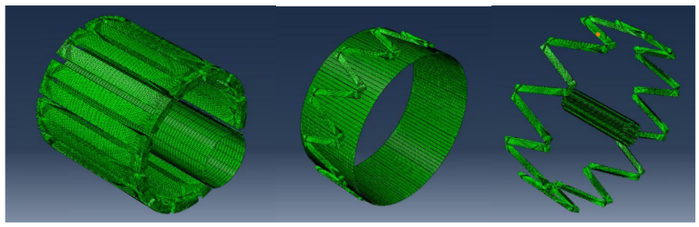
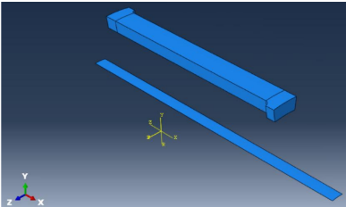
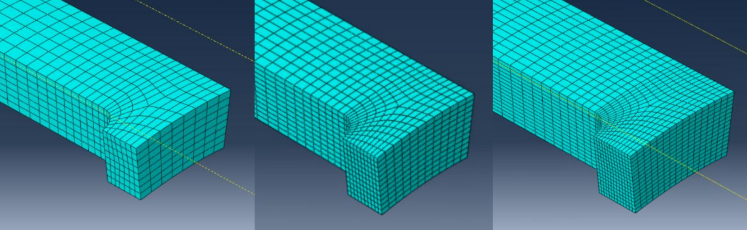
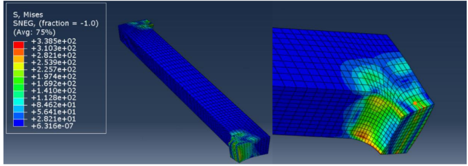

Stent Analysis
Finite element analysis of a balloon-expandable vascular stent.
Project Overview
In this study, a simplified Finite Element model of a balloon-expandable stent was developed to simulate the balloon-induced deployment process and the subsequent structural response, with particular focus on stress distribution, equivalent plastic strain, radial recoil, and axial shortening. These quantities are evaluated to identify the most critical regions of the stent and to assess its post-expansion geometric stability. Furthermore, the influence of numerical deployment time and mesh refinement was investigated through a preliminary sensitivity analysis to assess the reliability and accuracy of the computed results.

Methodology
Starting from given CAD files of the balloon and a section of the stent, the analysis was carried out in Abaqus CAE only
considering relevant sectors of the structures to reduce computational cost.
Adequate symmetry boundary conditions and contact interactions were defined. A mesh sensitivity analysis was carried out to evaluate the optimal tradeoff
between mesh elements density and simulation complexity.
The loading phase was divided into 2 subphases, inflation and deflation of the balloon.


Results
Results highlighted a stress concentration in the curved connectors of the stent sector, with values indicating that
plastic deformation successfully occurred.
The highest plastic strains were also concentrated in these regions, making them sensitive to physiological fatigue loading.
A limited radial recoil was measured, confirming a considerable residual elastic behaviour. In addition, a small longitudinal shortening
was produced during the process without compromising the function of the device.
